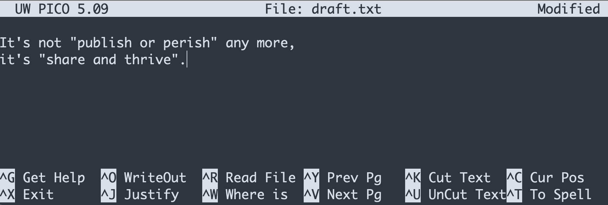
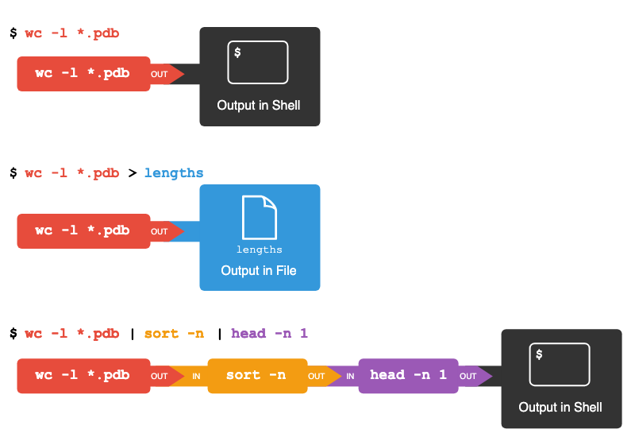

Introduction to the Unix Shell
Questions |
Objectives |
|---|---|
|
|
Background
We interact with computers in many different ways, such as through a keyboard and mouse, and touch screen interfaces. The most widely used way to interact with personal computers is called a graphical user interface (GUI). With a GUI, we give instructions by clicking a mouse and using menu-driven interactions.
While the visual aid of a GUI makes it intuitive to use, this way of delivering instructions to a computer scales very poorly. Imagine the following task: you have to copy the third line of one thousand text files in one thousand different directories and paste it into a single file. Using a GUI, you would not only be clicking at your desk for several hours, but you could potentially also commit an error in the process of completing this repetitive task. This is where we take advantage of the Unix shell. The Unix shell is both a command-line interface (CLI) and a scripting language, allowing such repetitive tasks to be done automatically and fast. With the proper commands, the shell can repeat tasks with or without some modification as many times as we want. Using the shell, the task in the literature example can be accomplished in seconds.
The Shell
The shell is a program where users can type commands. With the shell, it’s possible to invoke complicated programs or simple commands with only one line of code. The most popular Unix shell is Bash (the Bourne Again SHell — so-called because it’s derived from a shell written by Stephen Bourne). Bash is the default shell on most implementations of Unix (Mac computers running macOS Catalina or later releases, the default Unix Shell is “Zsh”) and in most packages that provide Unix-like tools for Windows. Note that ‘Git Bash’ is a piece of software that enables Windows users to use a Bash-like interface when interacting with Git.
Using the shell will take some effort and some time to learn. While a GUI presents you with choices to select, CLI choices are not automatically presented to you, so you must learn a few commands like new vocabulary in a language you’re studying. Luckily, a small number of “words” (i.e. commands) gets you a long way, and we’ll cover those essential few today.
The grammar of a shell allows you to combine existing tools into powerful pipelines and handle large volumes of data automatically. Sequences of commands can be written into a script, improving the reproducibility of workflows.
In addition, the command line is often the easiest way to interact with remote machines and supercomputers. Familiarity with the shell is near essential to run a variety of specialized tools and resources including high-performance computing systems. As clusters and cloud computing systems become more popular for scientific data crunching, being able to interact with the shell is becoming a necessary skill. We can build on the command-line skills covered here to tackle a wide range of scientific questions and computational challenges.
Let’s get started.
The prompt
When the shell is first opened, you are presented with a prompt, indicating that the shell is waiting for input.
$The shell typically uses $ as the prompt, but may use a different symbol. In the examples for this lesson, we’ll show the prompt as $. Most importantly, do not type the prompt when typing commands. Only type the command that follows the prompt. This rule applies both in these lessons and in lessons from other sources. Also note that after you type a command, you have to press the Enter key to execute it.
The prompt is followed by a text cursor, a character that indicates the position where your typing will appear. The cursor is usually a flashing or solid block, but it can also be an underscore or a pipe. You may have seen it in a text editor program, for example.
Note that your prompt might look a little different. In particular, most popular shell environments by default put your user name and the host name before the $. Such a prompt might look like, e.g.:
sklucas@localhost $The prompt might even include more than this. Do not worry if your prompt is not just a short $. This lesson does not depend on this additional information and it should also not get in your way. The only important item to focus on is the $ character itself and we will see later why.
So let’s try our first command, ls, which is short for listing. This command will list the contents of the current directory:
$ lsDesktop Downloads Movies Pictures
Documents Library Music PublicA Typical Problem
You are a marine biologist who has just returned from a six-month survey of the North Pacific Gyre, where you have sampled gelatinous marine life in the Great Pacific Garbage Patch. You have 1520 samples that you’ve run through an assay machine to measure the relative abundance of 300 proteins. You need to run these 1520 files through an imaginary program called
goostats.sh. In addition to this huge task, you have to write up results by the end of the month, so your paper can appear in a special issue of Aquatic Goo Letters.If you choose to run
goostats.shby hand using a GUI, you’ll have to select and open a file 1520 times. Ifgoostats.shtakes 30 seconds to run each file, the whole process will take more than 12 hours. With the shell, you can instead assign your computer this mundane task while you focuses her attention on writing your paper.The next few lessons will explore the ways you can achieve this. More specifically, the lessons explain how you can use a command shell to run the
goostats.shprogram, using loops to automate the repetitive steps of entering file names, so that your computer can work while you write your paper.As a bonus, once you have put a processing pipeline together, you will be able to use it again whenever you collect more data.
In order to achieve her task, you need to know how to:
- navigate to a file/directory
- create a file/directory
- check the length of a file
- chain commands together
- retrieve a set of files
- iterate over files
- run a shell script containing her pipeline
- A shell is a program whose primary purpose is to read commands and run other programs.
- This lesson uses Bash, the default shell in many implementations of Unix.
- Programs can be run in Bash by entering commands at the command-line prompt.
- The shell’s main advantages are its high action-to-keystroke ratio, its support for automating repetitive tasks, and its capacity to access networked machines.
- A significant challenge when using the shell can be knowing what commands need to be run and how to run them.
Creating, moving, removing
| Questions | Objectives |
|---|---|
|
|
Creating Directories and Files
We now know how to explore files and directories, but how do we create them in the first place?
In this episode we will learn about creating and moving files and directories, using the exercise-data/writing directory as an example.
Step one: see where we are and what we already have
We should still be in the shell-lesson-data directory on the Desktop, which we can check using:
$ pwd/Users/nelle/Desktop/shell-lesson-dataNext we’ll move to the exercise-data/writing directory and see what it contains:
$ cd exercise-data/writing/
$ ls -Fhaiku.txt LittleWomen.txtCreate a directory
Let’s create a new directory called thesis using the command mkdir thesis (which has no output):
$ mkdir thesisAs you might guess from its name, mkdir means ‘make directory’. Since thesis is a relative path (i.e., does not have a leading slash, like /what/ever/thesis), the new directory is created in the current working directory:
$ ls -Fhaiku.txt LittleWomen.txt thesis/Since we’ve just created the thesis directory, there’s nothing in it yet:
$ ls -F thesisNote that mkdir is not limited to creating single directories one at a time. The -p option allows mkdir to create a directory with nested subdirectories in a single operation:
$ mkdir -p ../project/data ../project/resultsThe -R option to the ls command will list all nested subdirectories within a directory. Let’s use ls -FR to recursively list the new directory hierarchy we just created in the project directory:
$ ls -FR ../project../project/:
data/ results/
../project/data:
../project/results:Create a text file
Let’s change our working directory to thesis using cd, then run a text editor called Nano to create a file called draft.txt:
$ cd thesis
$ nano draft.txtLet’s type a few lines of text:

Once we’re happy with our text, we can press Ctrl+O (press the Ctrl or Control key and, while holding it down, press the O key) to write our data to disk. We will be asked to provide a name for the file that will contain our text. Press Return to accept the suggested default of draft.txt.
Once our file is saved, we can use Ctrl+X to quit the editor and return to the shell.
nano doesn’t leave any output on the screen after it exits, but ls now shows that we have created a file called draft.txt:
$ lsdraft.txtWhat’s in a name?
You may have noticed that all of your files are named ‘something dot something’, and in this part of the lesson, we always used the extension
.txt. This is just a convention; we can call a filemythesisor almost anything else we want. However, most people use two-part names most of the time to help them (and their programs) tell different kinds of files apart. The second part of such a name is called the filename extension and indicates what type of data the file holds:.txtsignals a plain text file,.cfgis a configuration file full of parameters for some program or other,.pngis a PNG image, and so on.This is just a convention, albeit an important one. Files merely contain bytes; it’s up to us and our programs to interpret those bytes according to the rules for plain text files, PDF documents, configuration files, images, and so on.
Naming a PNG image of a whale as
whale.mp3doesn’t somehow magically turn it into a recording of whale song, though it might cause the operating system to associate the file with a music player program. In this case, if someone double-clickedwhale.mp3in a file explorer program, the music player will automatically (and erroneously) attempt to open thewhale.mp3file.
Moving Files and Directories
Returning to the shell-lesson-data/exercise-data/writing directory,
$ cd ~/Desktop/shell-lesson-data/exercise-data/writingIn our thesis directory we have a file draft.txt which isn’t a particularly informative name, so let’s change the file’s name using mv, which is short for ‘move’:
$ mv thesis/draft.txt thesis/quotes.txtThe first argument tells mv what we’re ‘moving’, while the second is where it’s to go. In this case, we’re moving thesis/draft.txt to thesis/quotes.txt, which has the same effect as renaming the file. Sure enough, ls shows us that thesis now contains one file called quotes.txt:
$ ls thesisquotes.txtOne must be careful when specifying the target file name, since mv will silently overwrite any existing file with the same name, which could lead to data loss. By default, mv will not ask for confirmation before overwriting files. However, an additional option, mv -i (or mv --interactive), will cause mv to request such confirmation.
Note that mv also works on directories.
Let’s move quotes.txt into the current working directory. We use mv once again, but this time we’ll use just the name of a directory as the second argument to tell mv that we want to keep the filename but put the file somewhere new. (This is why the command is called ‘move’.) In this case, the directory name we use is the special directory name . that we mentioned earlier.
$ mv thesis/quotes.txt .The effect is to move the file from the directory it was in to the current working directory. ls now shows us that thesis is empty:
$ ls thesis$Alternatively, we can confirm the file quotes.txt is no longer present in the thesis directory by explicitly trying to list it:
$ ls thesis/quotes.txtls: cannot access 'thesis/quotes.txt': No such file or directoryls with a filename or directory as an argument only lists the requested file or directory. If the file given as the argument doesn’t exist, the shell returns an error as we saw above. We can use this to see that quotes.txt is now present in our current directory:
$ ls quotes.txtquotes.txtCopying Files and Directories
The cp command works very much like mv, except it copies a file instead of moving it. We can check that it did the right thing using ls with two paths as arguments — like most Unix commands, ls can be given multiple paths at once:
$ cp quotes.txt thesis/quotations.txt
$ ls quotes.txt thesis/quotations.txtquotes.txt thesis/quotations.txtWe can also copy a directory and all its contents by using the recursive option -r, e.g. to back up a directory:
$ cp -r thesis thesis_backupWe can check the result by listing the contents of both the thesis and thesis_backup directory:
$ ls thesis thesis_backupthesis:
quotations.txt
thesis_backup:
quotations.txtIt is important to include the -r flag. If you want to copy a directory and you omit this option you will see a message that the directory has been omitted because -r not specified.
$ cp thesis thesis_backup
cp: -r not specified; omitting directory 'thesis'Removing files and directories
Returning to the shell-lesson-data/exercise-data/writing directory, let’s tidy up this directory by removing the quotes.txt file we created. The Unix command we’ll use for this is rm (short for ‘remove’):
$ rm quotes.txtWe can confirm the file has gone using ls:
$ ls quotes.txtls: cannot access 'quotes.txt': No such file or directoryThe Unix shell doesn’t have a trash bin that we can recover deleted files from (though most graphical interfaces to Unix do). Instead, when we delete files, they are unlinked from the file system so that their storage space on disk can be recycled. Tools for finding and recovering deleted files do exist, but there’s no guarantee they’ll work in any particular situation, since the computer may recycle the file’s disk space right away.
If we try to remove the thesis directory using rm thesis, we get an error message:
$ rm thesisrm: cannot remove 'thesis': Is a directoryThis happens because rm by default only works on files, not directories.
rm can remove a directory and all its contents if we use the recursive option -r, and it will do so without any confirmation prompts:
$ rm -r thesisGiven that there is no way to retrieve files deleted using the shell, rm -r should be used with great caution (you might consider adding the interactive option rm -r -i).
Operations with Multiple Filenames
Oftentimes one needs to copy or move several files at once. This can be done by providing a list of individual filenames, or specifying a naming pattern using wildcards. Wildcards are special characters that can be used to represent unknown characters or sets of characters when navigating the Unix file system.
Using Wildcards for Accessing Multiple Files at Once
* is a wildcard, which represents zero or more other characters. Let’s consider the shell-lesson-data/exercise-data/alkanes directory: *.pdb represents ethane.pdb, propane.pdb, and every file that ends with ‘.pdb’. On the other hand, p*.pdb only represents pentane.pdb and propane.pdb, because the ‘p’ at the front can only represent filenames that begin with the letter ‘p’.
? is also a wildcard, but it represents exactly one character. So ?ethane.pdb could represent methane.pdb whereas *ethane.pdb represents both ethane.pdb and methane.pdb.
Wildcards can be used in combination with each other. For example, ???ane.pdb indicates three characters followed by ane.pdb, giving cubane.pdb ethane.pdb octane.pdb.
When the shell sees a wildcard, it expands the wildcard to create a list of matching filenames before running the preceding command. As an exception, if a wildcard expression does not match any file, Bash will pass the expression as an argument to the command as it is. For example, typing ls *.pdf in the alkanes directory (which contains only files with names ending with .pdb) results in an error message that there is no file called *.pdf. However, generally commands like wc and ls see the lists of file names matching these expressions, but not the wildcards themselves. It is the shell, not the other programs, that expands the wildcards.
cp [old] [new]copies a file.mkdir [path]creates a new directory.mv [old] [new]moves (renames) a file or directory.rm [path]removes (deletes) a file.*matches zero or more characters in a filename, so*.txtmatches all files ending in.txt.?matches any single character in a filename, so?.txtmatchesa.txtbut notany.txt.- Use of the Control key may be described in many ways, including
Ctrl-X,Control-X, and^X. - The shell does not have a trash bin: once something is deleted, it’s really gone.
- Most files’ names are
something.extension. The extension isn’t required, and doesn’t guarantee anything, but is normally used to indicate the type of data in the file. - Depending on the type of work you do, you may need a more powerful text editor than Nano.
Pipes and Filters
Questions |
Objectives |
|
|
Now that we know a few basic commands, we can finally look at the shell’s most powerful feature: the ease with which it lets us combine existing programs in new ways. We’ll start with the directory shell-lesson-data/exercise-data/alkanes that contains six files describing some simple organic molecules. The .pdb extension indicates that these files are in Protein Data Bank format, a simple text format that specifies the type and position of each atom in the molecule.
$ lscubane.pdb methane.pdb pentane.pdb
ethane.pdb octane.pdb propane.pdbLet’s run an example command:
$ wc cubane.pdb20 156 1158 cubane.pdbwc is the ‘word count’ command: it counts the number of lines, words, and characters in files (returning the values in that order from left to right).
If we run the command wc *.pdb, the * in *.pdb matches zero or more characters, so the shell turns *.pdb into a list of all .pdb files in the current directory:
$ wc *.pdb 20 156 1158 cubane.pdb
12 84 622 ethane.pdb
9 57 422 methane.pdb
30 246 1828 octane.pdb
21 165 1226 pentane.pdb
15 111 825 propane.pdb
107 819 6081 totalNote that wc *.pdb also shows the total number of all lines in the last line of the output.
If we run wc -l instead of just wc, the output shows only the number of lines per file:
$ wc -l *.pdb 20 cubane.pdb
12 ethane.pdb
9 methane.pdb
30 octane.pdb
21 pentane.pdb
15 propane.pdb
107 totalThe -m and -w options can also be used with the wc command to show only the number of characters or the number of words, respectively.
Capturing output from commands
Output page by page with less
We’ll continue to use cat in this lesson, for convenience and consistency, but it has the disadvantage that it always dumps the whole file onto your screen. More useful in practice is the command less (e.g. less lengths.txt). This displays a screenful of the file, and then stops. You can go forward one screenful by pressing the spacebar, or back one by pressing b. Press q to quit.
Which of these files contains the fewest lines? It’s an easy question to answer when there are only six files, but what if there were 6000? Our first step toward a solution is to run the command:
$ wc -l *.pdb > lengths.txtThe greater than symbol, >, tells the shell to redirect the command’s output to a file instead of printing it to the screen. This command prints no screen output, because everything that wc would have printed has gone into the file lengths.txt instead. If the file doesn’t exist prior to issuing the command, the shell will create the file. If the file exists already, it will be silently overwritten, which may lead to data loss. Thus, redirect commands require caution.
ls lengths.txt confirms that the file exists:
$ ls lengths.txtlengths.txtWe can now send the content of lengths.txt to the screen using cat lengths.txt. The cat command gets its name from ‘concatenate’ i.e. join together, and it prints the contents of files one after another. There’s only one file in this case, so cat just shows us what it contains:
$ cat lengths.txt 20 cubane.pdb
12 ethane.pdb
9 methane.pdb
30 octane.pdb
21 pentane.pdb
15 propane.pdb
107 totalFiltering output
Next we’ll use the sort command to sort the contents of the lengths.txt file. But first we’ll do an exercise to learn a little about the sort command:
We will also use the -n option to specify that the sort is numerical instead of alphanumerical. This does not change the file; instead, it sends the sorted result to the screen:
$ sort -n lengths.txt 9 methane.pdb
12 ethane.pdb
15 propane.pdb
20 cubane.pdb
21 pentane.pdb
30 octane.pdb
107 totalWe can put the sorted list of lines in another temporary file called sorted-lengths.txt by putting > sorted-lengths.txt after the command, just as we used > lengths.txt to put the output of wc into lengths.txt. Once we’ve done that, we can run another command called head to get the first few lines in sorted-lengths.txt:
$ sort -n lengths.txt > sorted-lengths.txt
$ head -n 1 sorted-lengths.txt 9 methane.pdbUsing -n 1 with head tells it that we only want the first line of the file; -n 20 would get the first 20, and so on. Since sorted-lengths.txt contains the lengths of our files ordered from least to greatest, the output of head must be the file with the fewest lines.
It’s a very bad idea to try redirecting the output of a command that operates on a file to the same file. For example:
$ sort -n lengths.txt > lengths.txtDoing something like this may give you incorrect results and/or delete the contents of lengths.txt.
Passing output to another command
In our example of finding the file with the fewest lines, we are using two intermediate files lengths.txt and sorted-lengths.txt to store output. This is a confusing way to work because even once you understand what wc, sort, and head do, those intermediate files make it hard to follow what’s going on. We can make it easier to understand by running sort and head together:
$ sort -n lengths.txt | head -n 1 9 methane.pdbThe vertical bar, |, between the two commands is called a pipe. It tells the shell that we want to use the output of the command on the left as the input to the command on the right.
This has removed the need for the sorted-lengths.txt file.
Combining multiple commands
Nothing prevents us from chaining pipes consecutively. We can for example send the output of wc directly to sort, and then send the resulting output to head. This removes the need for any intermediate files.
We’ll start by using a pipe to send the output of wc to sort:
$ wc -l *.pdb | sort -n 9 methane.pdb
12 ethane.pdb
15 propane.pdb
20 cubane.pdb
21 pentane.pdb
30 octane.pdb
107 totalWe can then send that output through another pipe, to head, so that the full pipeline becomes:
$ wc -l *.pdb | sort -n | head -n 1 9 methane.pdbThis is exactly like a mathematician nesting functions like log(3x) and saying ‘the log of three times x’. In our case, the algorithm is ‘head of sort of line count of *.pdb’.
The redirection and pipes used in the last few commands are illustrated below:

Tools designed to work together
This idea of linking programs together is why Unix has been so successful. Instead of creating enormous programs that try to do many different things, Unix programmers focus on creating lots of simple tools that each do one job well, and that work well with each other. This programming model is called ‘pipes and filters’. We’ve already seen pipes; a filter is a program like wc or sort that transforms a stream of input into a stream of output. Almost all of the standard Unix tools can work this way. Unless told to do otherwise, they read from standard input, do something with what they’ve read, and write to standard output.
The key is that any program that reads lines of text from standard input and writes lines of text to standard output can be combined with every other program that behaves this way as well. You can and should write your programs this way so that you and other people can put those programs into pipes to multiply their power.
Your Pipeline: Checking Files
You have run your samples through the assay machines and created 17 files in the north-pacific-gyre directory described earlier. As a quick check, starting from the shell-lesson-data directory, you type:
$ cd north-pacific-gyre
$ wc -l *.txtThe output is 18 lines that look like this:
300 NENE01729A.txt
300 NENE01729B.txt
300 NENE01736A.txt
300 NENE01751A.txt
300 NENE01751B.txt
300 NENE01812A.txt
... ...Now you type this:
$ wc -l *.txt | sort -n | head -n 5 240 NENE02018B.txt
300 NENE01729A.txt
300 NENE01729B.txt
300 NENE01736A.txt
300 NENE01751A.txtWhoops: one of the files is 60 lines shorter than the others. When you go back and check it, you see that you did that assay at 8:00 on a Monday morning — someone was probably in using the machine on the weekend, and you forgot to reset it. Before re-running that sample, you check to see if any files have too much data:
$ wc -l *.txt | sort -n | tail -n 5 300 NENE02040B.txt
300 NENE02040Z.txt
300 NENE02043A.txt
300 NENE02043B.txt
5040 totalThose numbers look good — but what’s that ‘Z’ doing there in the third-to-last line? All of your samples should be marked ‘A’ or ‘B’; by convention, your lab uses ‘Z’ to indicate samples with missing information. To find others like it, you do this:
$ ls *Z.txtNENE01971Z.txt NENE02040Z.txtSure enough, when you check the log on your laptop, there’s no depth recorded for either of those samples. Since it’s too late to get the information any other way, you must exclude those two files from your analysis. You could delete them using rm, but there are actually some analyses you might do later where depth doesn’t matter, so instead, youwc counts lines, words, and characters in its inputs.
catdisplays the contents of its inputs.sortsorts its inputs.headdisplays the first 10 lines of its input by default without additional arguments.taildisplays the last 10 lines of its input by default without additional arguments.command > [file]redirects a command’s output to a file (overwriting any existing content).command >> [file]appends a command’s output to a file.[first] | [second]is a pipeline: the output of the first command is used as the input to the second.- The best way to use the shell is to use pipes to combine simple single-purpose programs (filters).’ll have to be careful later on to select files using the wildcard expressions
NENE*A.txt NENE*B.txt.